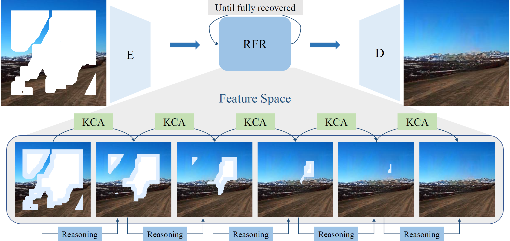

Existing inpainting methods have achieved promising performance for recovering regular or small image defects. However, filling in large continuous holes remains difficult due to the lack of constraints for the hole center. To address this problem, we devise a Recurrent Feature Reasoning network (RFR-Net) which is mainly constructed by a plug-and-play Recurrent Feature Reasoning module and a Knowledge Consistent Attention (KCA) module. Analogous to how humans solve puzzles (i.e., first solve the easier parts and then use the results as additional information to solve difficult parts), the RFR module recurrently infers the hole boundaries of the convolutional feature maps and then uses them as clues for further inference. The module progressively strengthens the constraints for the hole center and the results become explicit. To capture information from distant places in the feature map for RFR, we further develop KCA and incorporate it in RFR. In addition, we propose Flexible RFR-Net (FRFR) that enhances the effect without significantly increasing network parameters. In FRFR, to dynamically make use of valid information, we employ a flexible normalization (FN) module, which combines three basic normalization methods to build regular FN (FN-R) and mask-wise FN (FN-M). Extensive experiments comparing the performance with state-of-the-art image inpainting methods demonstrate that both RFR and FRFR improve the qualitative scores, as well as significantly reduce the distortion in quantitative results and obtain realistic images with fine details. What's more, the proposed RFR is applied to the image super-resolution task, which demonstrates the superiority of the RFR module in various image restoration tasks.
The masked image is first mapped into the convolutional feature space and processed by a shared Feature Reasoning module recurrently. After the feature map is fully recovered, the generated feature maps are merged together (Omitted in this figure) and the merged feature is translated back to a RGB image.
We evaluate and compare with previous approaches on three benchmark datasets: Matterport, Replica, and RealEstate10K. Our model outperforms previous work by a large margin under PSNR and other metrics (see paper for details).
Compared to SynSin (Wiles et al. 2020), a prior state-of-the-art based on point cloud, our Worldsheet generalizes better to large viewpoint changes and has fewer artifacts.
Sometimes artifacts occur when the depth is discontinuous around the object boundary. For instance, the boundary of the flower or the tree is blurry. We hope to address these issues in future work by segmenting the Worldsheet around depth boundaries.
@inproceedings{li2020recurrent,
title={Recurrent feature reasoning for image inpainting},
author={Li, Jingyuan and Wang, Ning and Zhang, Lefei and Du, Bo and Tao, Dacheng},
booktitle={Proceedings of the IEEE/CVF Conference on Computer Vision and Pattern Recognition (CVPR)},
pages={7760--7768},
year={2020}
}